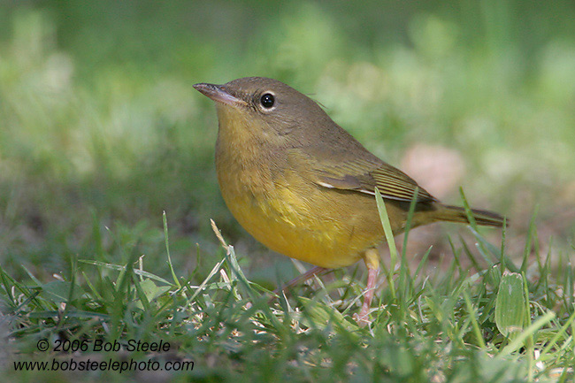

| These photographs accompany records that have been recently submitted to the committee. This record
has been ACCEPTED.  Mourning Warbler Oporornis philadelphia 16 September 2006, Galileo Hill Park, KER 2006-131 © 2006 Bob Steele Back to CBRC Rare Bird Photos |